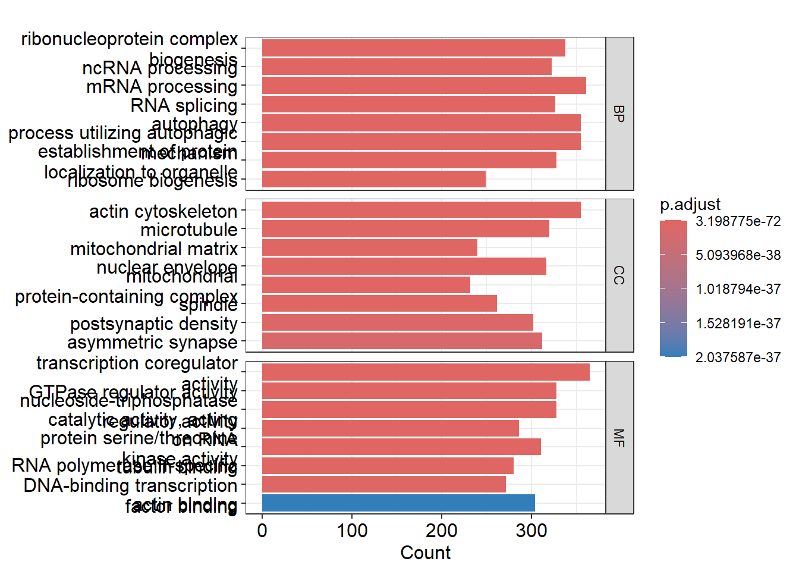
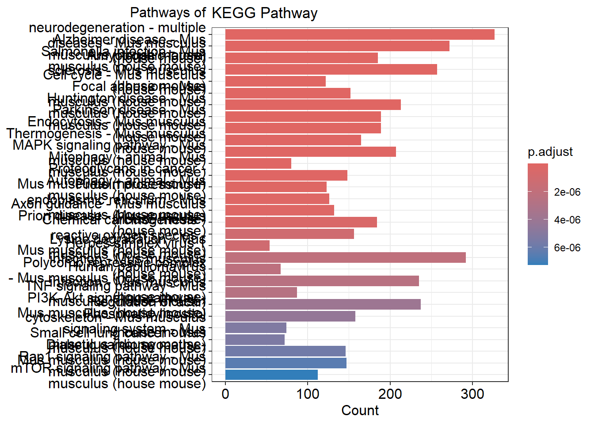
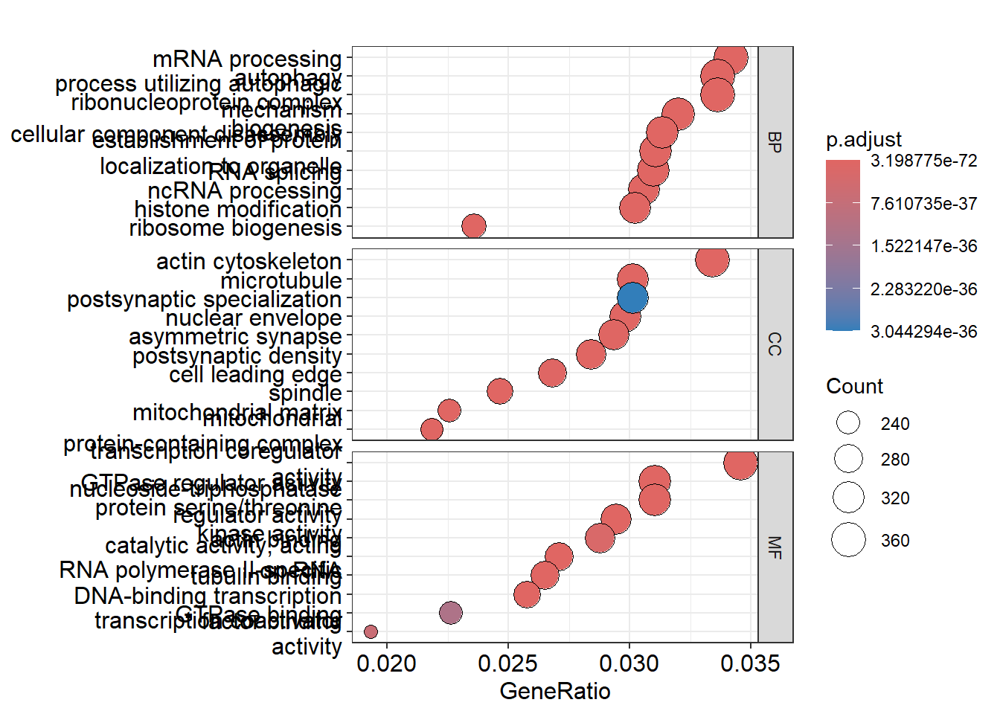
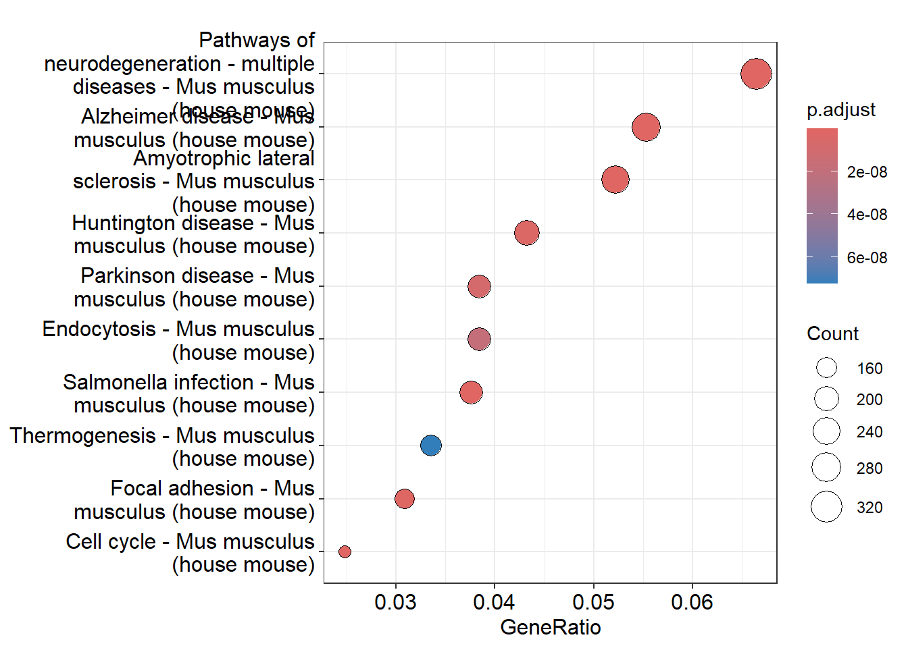
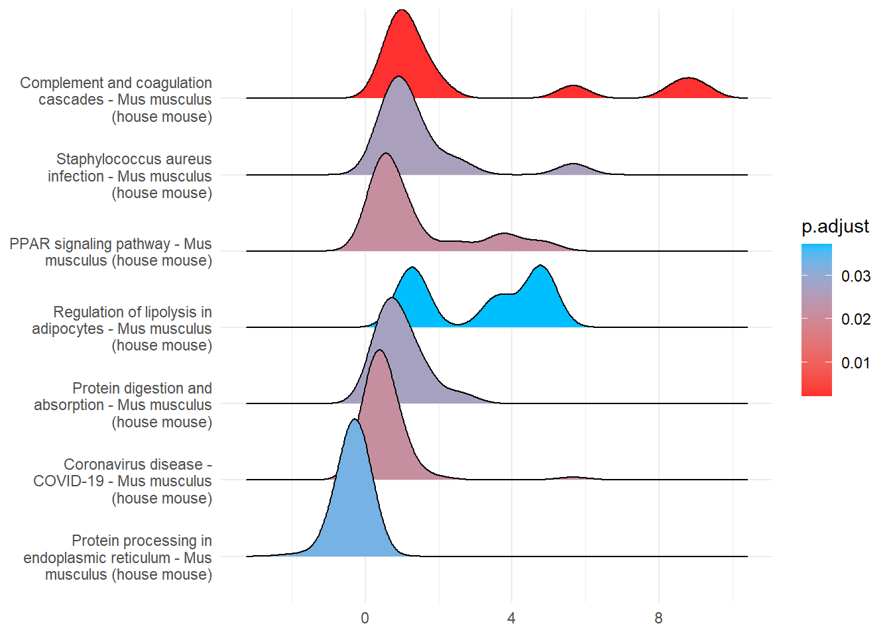
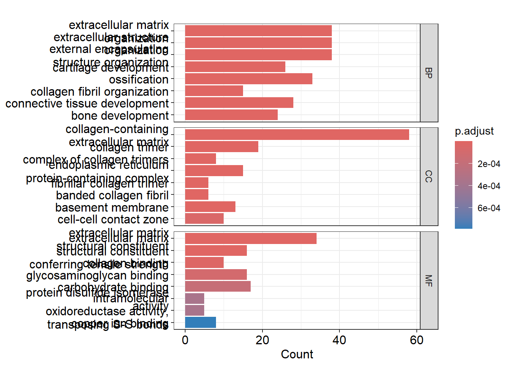
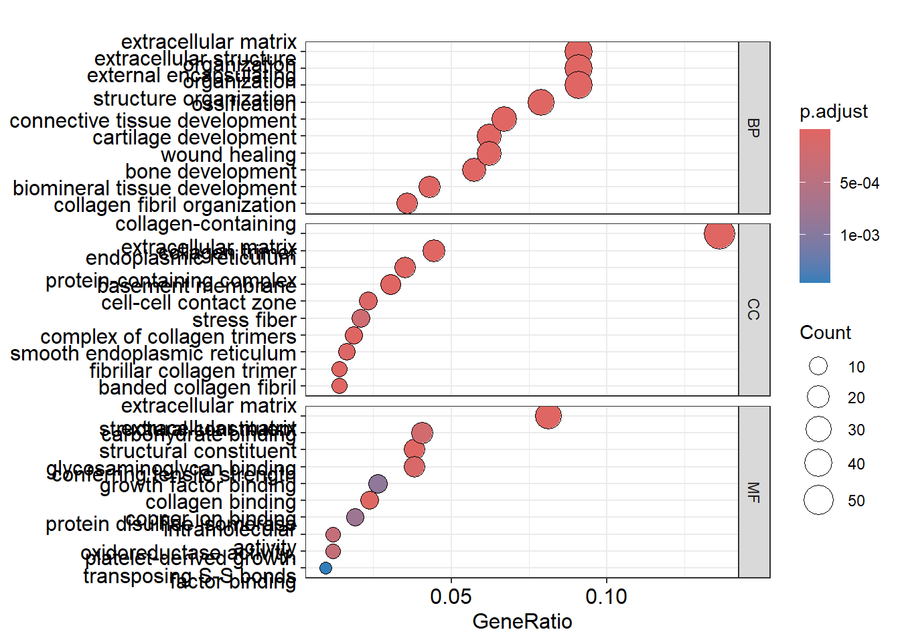
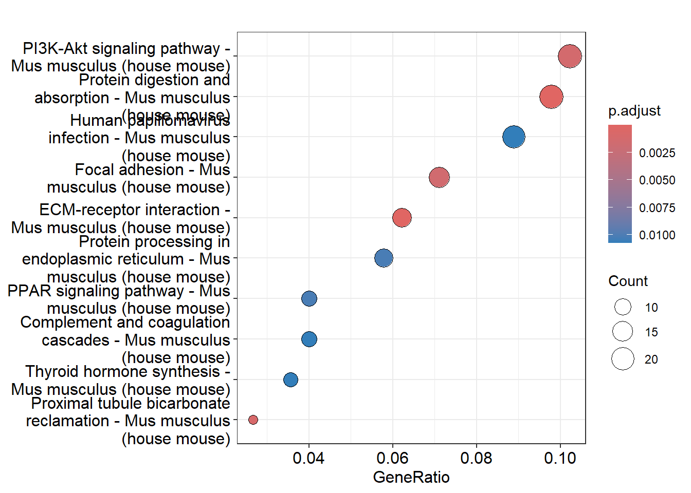
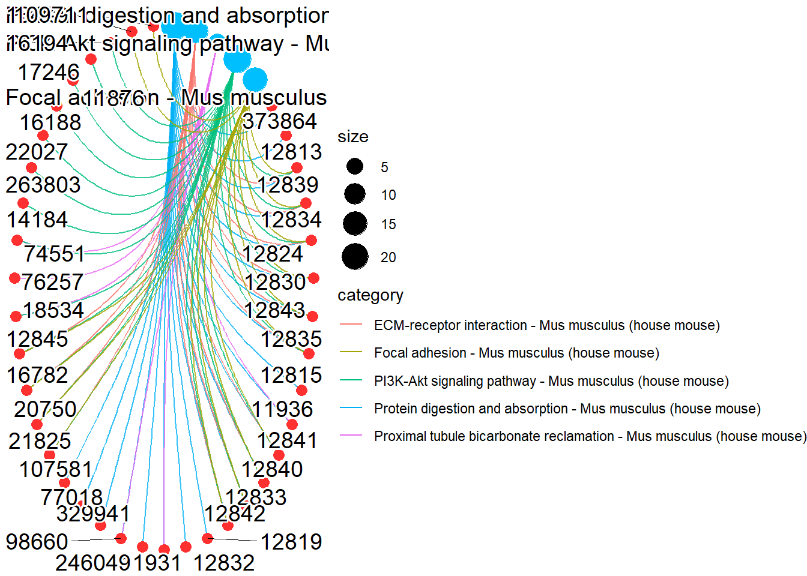

DOSE v3.26.2 For help: https://yulab-smu.top/biomedical-knowledge-mining-book/
If you use DOSE in published research, please cite:
Guangchuang Yu, Li-Gen Wang, Guang-Rong Yan, Qing-Yu He. DOSE: an R/Bioconductor package for Disease Ontology Semantic and Enrichment analysis. Bioinformatics 2015, 31(4):608-609
Warning in utils::download.file(url, quiet = TRUE, method = method, ...): the
'wininet' method is deprecated for http:// and https:// URLs
preparing geneSet collections...
GSEA analysis...
leading edge analysis...
done...
Warning in cnetplot.enrichResult(x, ...): Use 'color.params = list(edge = your_value)' instead of 'colorEdge'.
The colorEdge parameter will be removed in the next version.
Warning in cnetplot.enrichResult(x, ...): Use 'color.params = list(category = your_value)' instead of 'color_category'.
The color_category parameter will be removed in the next version.
Warning in cnetplot.enrichResult(x, ...): Use 'color.params = list(gene = your_value)' instead of 'color_gene'.
The color_gene parameter will be removed in the next version.
Warning in cnetplot.enrichResult(x, ...): Use 'color.params = list(edge = your_value)' instead of 'colorEdge'.
The colorEdge parameter will be removed in the next version.
Warning in cnetplot.enrichResult(x, ...): Use 'color.params = list(category = your_value)' instead of 'color_category'.
The color_category parameter will be removed in the next version.
Warning in cnetplot.enrichResult(x, ...): Use 'color.params = list(gene = your_value)' instead of 'color_gene'.
The color_gene parameter will be removed in the next version.
Scale for fill is already present.
Adding another scale for fill, which will replace the existing scale.
p2[[1]]

p2[[2]]

p2[[3]]

p2[[4]]

p2[7]
[[1]]
Picking joint bandwidth of 0.437

p3<-kegg_go(rTable_filtered)
'select()' returned 1:1 mapping between keys and columns
Warning in bitr(info$SYMBOL, fromType = "SYMBOL", toType = "ENTREZID", OrgDb =
GO_database): 2.61% of input gene IDs are fail to map...
Warning in merge.data.frame(info, gene, by = "SYMBOL"): column name 'NA' is
duplicated in the result
preparing geneSet collections...
GSEA analysis...
no term enriched under specific pvalueCutoff...
Warning in cnetplot.enrichResult(x, ...): Use 'color.params = list(edge = your_value)' instead of 'colorEdge'.
The colorEdge parameter will be removed in the next version.
Warning in cnetplot.enrichResult(x, ...): Use 'color.params = list(category = your_value)' instead of 'color_category'.
The color_category parameter will be removed in the next version.
Warning in cnetplot.enrichResult(x, ...): Use 'color.params = list(gene = your_value)' instead of 'color_gene'.
The color_gene parameter will be removed in the next version.
Warning in cnetplot.enrichResult(x, ...): Use 'color.params = list(edge = your_value)' instead of 'colorEdge'.
The colorEdge parameter will be removed in the next version.
Warning in cnetplot.enrichResult(x, ...): Use 'color.params = list(category = your_value)' instead of 'color_category'.
The color_category parameter will be removed in the next version.
Warning in cnetplot.enrichResult(x, ...): Use 'color.params = list(gene = your_value)' instead of 'color_gene'.
The color_gene parameter will be removed in the next version.
Scale for fill is already present.
Adding another scale for fill, which will replace the existing scale.
p3[[1]]

p3[[3]]
p3[[3]]

p3[[4]]

p3[[5]]
Warning: ggrepel: 2 unlabeled data points (too many overlaps). Consider
increasing max.overlaps

p3[[6]]
Warning: ggrepel: 15 unlabeled data points (too many overlaps). Consider
increasing max.overlaps